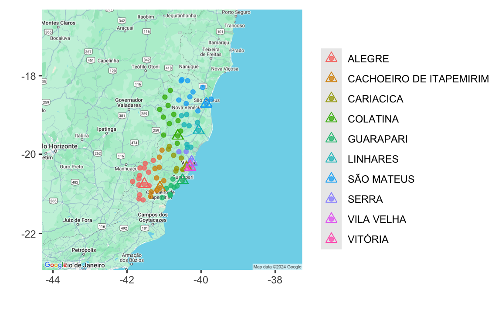
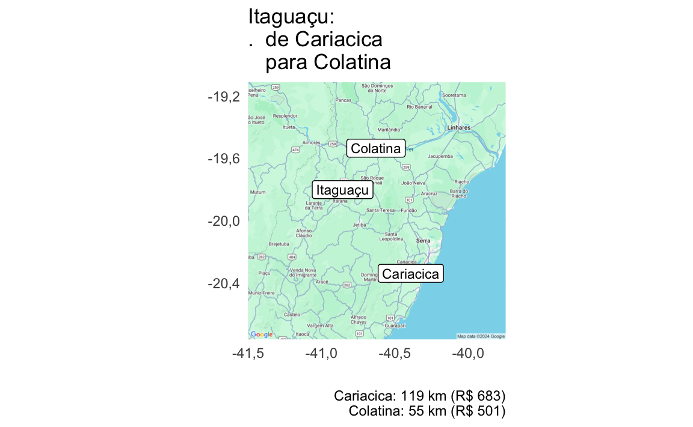
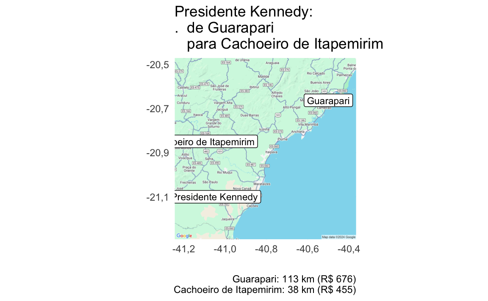
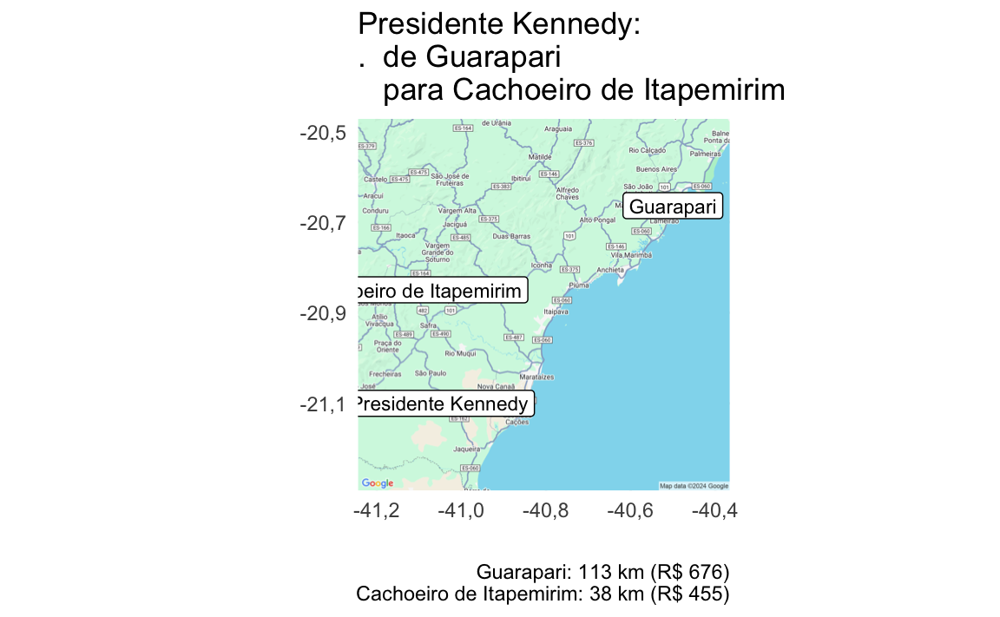

Otimizando a Coleta de Dados do IBGE com o Pacote R 'orce'
Eduardo Leoni - SES/BA - IBGE
orce.RmdAbstract
Apresentamos o pacote Rorce, uma ferramenta criada
para otimizar a alocação de Unidades de Coleta em pesquisas do
IBGE, com o objetivo de minimizar os custos totais. Por meio de um
modelo de otimização baseado em programação linear inteira mista,
o pacote considera fatores como distâncias, tempo de viagem,
custos fixos das agências e necessidade de diárias para encontrar
a distribuição ideal das unidades de coleta. Estudos de caso
realizados com a Pesquisa Nacional de Saúde (PNS) no Espírito
Santo e a Pesquisa de Orçamentos Familiares (POF) na Bahia
demonstram o potencial do orce para alcançar reduções
significativas nos custos de coleta, chegando a até 40%. Além da
economia financeira, o pacote promove um melhor balanceamento da
carga de trabalho entre as agências e oferece flexibilidade para
se adaptar às necessidades e restrições específicas de cada
pesquisa. O artigo explora estratégias adicionais de otimização,
como a reorganização da jurisdição das agências e o ajuste do
tempo de viagem considerado para o pagamento de diárias. A análise
dos resultados reforça a importância da redução dos custos fixos
como fator crucial para alcançar maior eficiência e economia na
coleta de dados. O orce demonstra potencial para
melhorar a eficiência e reduzir custos na coleta de dados do IBGE,
viabilizando pesquisas de alta qualidade com recursos otimizados.”
Introdução
A otimização da coleta de dados é um desafio comum em instituições de pesquisa que lidam com grandes volumes de informações distribuídas geograficamente. No caso do IBGE, a necessidade de otimizar a alocação das Unidades de Coleta (UCs) se torna essencial, dada a complexidade logística e os elevados custos envolvidos no processo.
As pesquisas MUNIC (Pesquisa de Informações Básicas Municipais) e POF (Pesquisa de Orçamentos Familiares) são dois exemplos que ilustram a importância dessa otimização. A MUNIC, que coleta dados sobre a gestão e estrutura dos municípios brasileiros, e a POF, que investiga os hábitos de consumo das famílias brasileiras, envolvem a coleta de dados em milhares de domicílios e municípios, gerando altos custos logísticos.
O pacote orce é uma ferramenta projetada para otimizar a alocação de Unidades de Coleta (UCs), como setores censitários, prefeituras de municípios ou estabelecimentos de ensino, às agências do IBGE. A eficiência dessa alocação é fundamental para garantir a coleta de dados de forma econômica e eficaz em pesquisas e censos de grande escala, como o Censo Demográfico.
Coletar dados em milhares de domicílios espalhados por um vasto território é um grande desafio. O orce entra em ação para ajudar a definir a melhor estratégia, minimizando o tempo de deslocamento e os custos envolvidos.
Principais Características
-
Roteamento e Geocodificação:
- Utiliza o banco de dados do CNEFE para obter coordenadas geográficas precisas para cada UC, garantindo a acurácia no cálculo de distâncias e rotas.
- A função
ponto_setor_densidadeauxilia na identificação de locais representativos dentro dos setores censitários, priorizando áreas de alta densidade populacional para facilitar o acesso e garantir que o algorítimo de roteamento tenha destinos/origens válidos.
-
Otimização Avançada da Alocação:
- O orce implementa um algoritmo inteligente que encontra a melhor forma de distribuir as UCs entre as agências do IBGE, levando em conta diversos fatores, como a distância entre os locais, o tempo de viagem, os custos fixos de cada agência e a necessidade de pagar diárias aos pesquisadores.
- A função principal, alocar_ucs permite que você personalize as restrições, como a capacidade de cada agência e as preferências de localização, para que a alocação se adapte às necessidades específicas do seu projeto.
-
Cálculo de Custos Detalhados:
- O pacote considera as fronteiras administrativas para determinar quando é necessário pagar diárias aos pesquisadores, garantindo que os custos totais sejam calculados com precisão.
- Outros custos importantes, como combustível e tempo de viagem, também são levados em conta para fornecer uma estimativa completa dos gastos da coleta de dados.
-
Flexibilidade e Adaptabilidade:
- O orce permite que você personalize vários parâmetros, como o custo do combustível, o custo por hora de viagem, o consumo de combustível por quilômetro e as restrições específicas de cada agência.
- Essa flexibilidade garante que o pacote possa ser adaptado a diferentes tipos de pesquisas e necessidades de coleta de dados, tornando-o uma ferramenta versátil para o IBGE.
Impacto e Aplicações
O pacote orce tem o potencial de gerar um impacto
significativo na eficiência e na economicidade das operações de pesquisa
e censo do IBGE. Ao otimizar a alocação de UCs, o pacote pode:
- Reduzir custos de viagem e tempo de deslocamento: Ao minimizar as distâncias percorridas e o tempo gasto em viagens, o pacote contribui para a redução dos custos operacionais e aumenta a produtividade das equipes de coleta de dados.
- Otimizar a utilização dos recursos das agências: A alocação eficiente das UCs às agências garante que os recursos sejam utilizados de forma equilibrada. A opção de impor límites máximos e mínimos de unidades de coleta por agência ajuda a evitar sobrecarga em algumas agências e ociosidade em outras.
- Facilitar o planejamento e a gestão da coleta de dados: A capacidade de personalizar parâmetros e restrições permite que o pacote se adapte às necessidades específicas de cada projeto, facilitando o planejamento e a gestão das operações de coleta de dados.
Estudos de caso
Caso 1. Calculando os custos da coleta da MUNIC
A Pesquisa de Informações Básicas Municipais (MUNIC) realizada pelo Instituto Brasileiro de Geografia e Estatística (IBGE) é uma pesquisa fundamental para coletar informações essenciais sobre os municípios em todo o Brasil.
A alocação eficiente dos municípios às agências do IBGE responsáveis pela coleta de dados é um aspecto importante para o sucesso da pesquisa MUNIC, principalmente nas Unidades da Federação com maior número de agências e municípios. O processo envolve atribuir cada município à agência mais adequada, considerando fatores como proximidade geográfica, capacidade da agência e custos de viagem. A complexidade dessa tarefa aumenta com o número de municípios e agências envolvidas, tornando a alocação manual desafiadora e potencialmente levando a atribuições abaixo do ideal.
Para enfrentar esse desafio, o pacote orce utiliza
algoritmos avançados de otimização e incorpora vários fatores de custo
para identificar a estratégia de alocação mais eficiente, minimizando
despesas de viagem, carga de trabalho da equipe e custos gerais da
pesquisa.
Vamos começar a Superintendência Estadual do Espírito Santo, que tem um número relativamente pequeno municípios e agências, facilitando a exposição do processo de estimação. Espírito Santo tem 78 municípios, e 10 agências do IBGE.
map_uc_agencias(mnow%>%rename(uc_lat=municipio_sede_lat, uc_lon=municipio_sede_lon)) +
geom_point(aes(y=municipio_sede_lat, x=municipio_sede_lon, color=agencia_nome_bdo), data=mnow, alpha=3/4)+
geom_point(aes(y=agencia_lat, x=agencia_lon, color=agencia_nome_bdo), data=mnow, shape=2, size=3) +
labs(x="", y="", color="")
Vamos supor que seja necessário visitar todos os 78 municípios. Como podemos estimar o custo da coleta? Partiremos de algumas premissas.
- Municípios na mesma microrregião ou região metropolitana não pagam diária, a não ser que seja exigida pernoite.
- Quando o tempo de viagem é maior que horas, paga-se diária, mesmo se na jurisdição da agência.
- A coleta presencial dura 2 dias.
- Quando há pernoite, são pagas 1,5 diárias, e a coleta é feita em 1 viagem(ns).
- Quando não há pernoite, são feitas 2 viagem(ns) (ida e volta). Há pagamento de meia-diária nos casos especificados no item 1.
- As viagens, feitas por veículos do IBGE, tem origem nas agências e destino nos municípios de coleta. Os veículos fazem 10 quilômetros por litro, e o custo do combustível é de por litro. Importante: o consumo de combustível pode ser reduzido significativamente fazendo “roteiros”, em que uma viagem percorre mais de um município. Vamos ignorar, por enquanto, essa possibilidade.
- Diárias são calculadas para apenas um funcionário e tem o valor de 335.
ucs_now <- municipios_22%>%
sf::st_drop_geometry()%>%
filter(substr(municipio_codigo,1,2)==ufnow$uf_codigo)%>%
left_join(agencias_bdo_mun%>%select(agencia_codigo, municipio_codigo), by="municipio_codigo")%>%
mutate(uc=municipio_codigo)%>%
## com agências intramunicipais tem mais de uma agência associada a município
## vamos deixar só a primeira (em ordem numérica)
group_by(municipio_codigo)%>%
arrange(agencia_codigo)%>%
slice(1)%>%
mutate(viagens=params_se$viagens, dias_coleta=params_se$dias_coleta)
#library(tictoc)
#tic()Os dados com as unidades de coleta tem a seguinte estrutura:
gt1(ucs_now%>%
head(10)%>%
ungroup%>%
select(uc=municipio_codigo, agencia_codigo, dias_coleta, viagens))| Uc | Agencia Codigo | Dias Coleta | Viagens |
|---|---|---|---|
| 3200102 | 320120900 | 2 | 1 |
| 3200136 | 320150600 | 2 | 1 |
| 3200169 | 320150600 | 2 | 1 |
| 3200201 | 320020100 | 2 | 1 |
| 3200300 | 320240500 | 2 | 1 |
| 3200359 | 320150600 | 2 | 1 |
| 3200409 | 320240500 | 2 | 1 |
| 3200508 | 320020100 | 2 | 1 |
| 3200607 | 320320500 | 2 | 1 |
| 3200706 | 320120900 | 2 | 1 |
Usamos como código da unidade de coleta (uc) o código
IBGE do município. Os dados devem ser únicos por uc. Dias
de coleta (dias_coleta) e número de viagens
(viagens) podem variar por município. Basta alterar aqui se
for o caso.
Precisamos também da distância de cada agência para cada município, e
se a viagem paga diária quando não há pernoite. No momento, estamos só
analisando os municípios com as respectivas agências de jurisdição, essa
diária não é devida. Mas ao analisar alocações alternativas, é
importante saber quando é que diárias são devidas. Essa informação está
na tabela agencias_municipios_diaria, disponível no pacote
para todas as unidades da federação.
| Agencia Codigo | Municipio Codigo | Diaria Municipio |
|---|---|---|
| 320020100 | 3200102 | TRUE |
| 320120900 | 3200102 | FALSE |
| 320130800 | 3200102 | TRUE |
| 320150600 | 3200102 | TRUE |
| 320240500 | 3200102 | TRUE |
| 320320500 | 3200102 | TRUE |
| 320490600 | 3200102 | TRUE |
| 320500200 | 3200102 | TRUE |
| 320520000 | 3200102 | TRUE |
| 320530900 | 3200102 | TRUE |
Precisamos também das distâncias, em quilômetros, entre cada agência
e cada sede municipal (disponível em
distancias_agencias_municipios_osrm), que combinamos com as
informações sobre as diárias
(agencias_municipios_diaria).
distancias_ucs <- distancias_agencias_municipios_osrm%>%
left_join(agencias_municipios_diaria_now,
by = join_by(agencia_codigo, municipio_codigo))%>%
mutate(uc=municipio_codigo)%>%
semi_join(ucs_now, by="uc")%>%
mutate(diaria_pernoite=duracao_horas>params_se$horas_viagem_pernoite)
gt1(distancias_ucs%>%
head(10)%>%
select(agencia_codigo, uc, distancia_km,
duracao_horas, diaria_municipio, diaria_pernoite))| Agencia Codigo | Uc | Distancia Km | Duracao Horas | Diaria Municipio | Diaria Pernoite |
|---|---|---|---|---|---|
| 320020100 | 3200102 | 132,51 | 2,2 | TRUE | TRUE |
| 320120900 | 3200102 | 119,44 | 2,03 | FALSE | TRUE |
| 320130800 | 3200102 | 134,24 | 1,86 | TRUE | TRUE |
| 320150600 | 3200102 | 111,28 | 1,73 | TRUE | TRUE |
| 320240500 | 3200102 | 159,66 | 2,23 | TRUE | TRUE |
| 320320500 | 3200102 | 184,21 | 3,25 | TRUE | TRUE |
| 320490600 | 3200102 | 267,44 | 4,59 | TRUE | TRUE |
| 320500200 | 3200102 | 162,79 | 2,32 | TRUE | TRUE |
| 320520000 | 3200102 | 148,3 | 2,2 | TRUE | TRUE |
| 320530900 | 3200102 | 146,31 | 2,14 | TRUE | TRUE |
Observação: A coluna diaria_pernoite é calculada com
base na duração da viagem (ida). A partir de 1,5, são pagas diárias,
mesmo se na jurisdição da agência.
Estamos, agora, prontos para calcular os custos de coleta.
args_alocar_ucs <- params_se[names(params_se)%>%intersect(args(alocar_ucs)%>%as.list%>%names())]
params_se[names(params_se)%>%setdiff(args(alocar_ucs)%>%as.list%>%names())]
#> $horas_viagem_pernoite
#> [1] 1,5
#>
#> $viagens
#> [1] 1
#>
#> $dias_coleta
#> [1] 2
#>
#> $custo_fixo
#> [1] 0
#>
#> $uf_sigla
#> [1] "ES"
args_alocar_ucs$agencias <- agencias_now%>%mutate(dias_coleta_agencia_max=Inf)
#args_alocar_ucs$distancias_agencias <- distancias_agencias
args_alocar_ucs$distancias_ucs <- distancias_ucs
args_alocar_ucs$ucs <- ucs_now
args_alocar_ucs$resultado_completo <- TRUE
res <- do.call(what = alocar_ucs,
args=args_alocar_ucs)Custos por agência
j <- res$resultado_ucs_jurisdicao%>%
left_join(agencias_now%>%sf::st_drop_geometry(), by="agencia_codigo")%>%
left_join(assistencias, by="agencia_codigo")%>%
group_by(assistencia_nome, agencia_nome)%>%
mutate(municipios=1)%>%
summarise(across(c(municipios, total_diarias, custo_diarias, distancia_total_km, custo_combustivel), sum))
#> `summarise()` has grouped output by 'assistencia_nome'. You can override using
#> the `.groups` argument.
gt(j%>%ungroup, groupname_col = 'assistencia_nome', rowname_col='agencia_nome')%>%
gt::summary_rows(fns = list(fn='sum', label="Total da Assistência"), fmt=~fmt_nums(.))%>%
fmt_nums()%>%
gt::cols_label_with(fn="nomear_colunas")%>%
gt::grand_summary_rows(fns = list(fn='sum', label="Total da Superintendência")
, fmt = ~fmt_nums(.))%>%
print_gt()| Municipios | Total Diarias | Custo Diarias | Distancia Total Km | Custo Combustivel | |
|---|---|---|---|---|---|
| Alegre | 14 | 1,5 | R$502 | 2.723 | R$1.634 |
| Cachoeiro de Itapemirim | 10 | 3 | R$1.005 | 1.892,12 | R$1.135 |
| Cariacica | 8 | 3 | R$1.005 | 1.347,08 | R$808 |
| Colatina | 12 | 7,5 | R$2.512 | 2.605,74 | R$1.563 |
| Guarapari | 9 | 1,5 | R$502 | 1.799,58 | R$1.080 |
| Linhares | 9 | 1,5 | R$502 | 1.796,6 | R$1.078 |
| Serra | 3 | 0 | R$0 | 414,28 | R$249 |
| São Mateus | 11 | 6 | R$2.010 | 2.259,2 | R$1.356 |
| Vila Velha | 1 | 0 | R$0 | 3,32 | R$2 |
| Vitória | 1 | 0 | R$0 | 21,08 | R$13 |
| Total da Superintendência | 78 | 24 | R$8.040 | 14.862 | R$8.917 |
resultado_ucs <- bind_rows(
res$resultado_ucs_otimo%>%mutate(plano= "otimo"),
res$resultado_ucs_jurisdicao%>%mutate(plano= "jurisdicao"))%>%
group_by(uc)%>%
mutate(mudanca=length(unique(agencia_codigo))>1)
toexport <- res$resultado_ucs_jurisdicao%>%
rename(municipio_codigo=uc)%>%
left_join(agencias_now%>%sf::st_drop_geometry(), by = join_by(agencia_codigo))%>%
left_join(municipios_22%>%select(municipio_codigo, municipio_nome), by = join_by(municipio_codigo))%>%
left_join(assistencias, by = join_by(agencia_codigo))%>%
transmute(
assistencia_nome,
agencia_codigo, agencia_nome,
municipio_nome, municipio_codigo,
distancia_km, duracao_horas, diaria, meia_diaria, trechos, total_diarias, custo_diarias, distancia_total_km, custo_combustivel, custo_horas_viagem, custo_deslocamento)
export_dir <- file.path(here::here("vignettes", "articles", "munic"))
dir.create(export_dir, recursive = TRUE, showWarnings = FALSE)
export_path <- file.path(export_dir,paste0("munic_", ufnow$uf_codigo, "_", format(Sys.time(), "%Y%m%d_%H"), ".xlsx"))
toexport_l <- lapply(toexport%>%split(.$assistencia_nome), function(x) janitor::remove_constant(x))
#sigba::excel(toexport_l, filename = export_path)Custos por município
mnow%>%
left_join(res$resultado_ucs_jurisdicao, by=c("municipio_codigo"="uc", "agencia_codigo"))%>%
transmute(municipio_nome, agencia_nome=capitalizar(agencia_nome), custo_diarias, custo_combustivel)%>%
sf::st_drop_geometry()%>%
arrange(desc(custo_diarias+custo_combustivel))%>%
head(10)%>%
gt1()| Municipio | Agencia | Custo Diarias | Custo Combustivel |
|---|---|---|---|
| Ecoporanga | Colatina | R$502 | R$218 |
| Água Doce do Norte | Colatina | R$502 | R$189 |
| Laranja da Terra | Cachoeiro de Itapemirim | R$502 | R$184 |
| Ponto Belo | São Mateus | R$502 | R$166 |
| Mucurici | São Mateus | R$502 | R$159 |
| Mantenópolis | Colatina | R$502 | R$153 |
| Barra de São Francisco | Colatina | R$502 | R$152 |
| Afonso Cláudio | Cachoeiro de Itapemirim | R$502 | R$143 |
| Itaguaçu | Cariacica | R$502 | R$143 |
| Montanha | São Mateus | R$502 | R$137 |
Lidando com contigências da coleta
Suponha agora que é necessário fazer uma visita ao município de Barra
de São Francisco, mas a agência de jurisdição não está disponível por
qualquer motivo (férias, licença de saúde, veículo do IBGE quebrado,
etc.) Quais são as agências alternativas para realizar essa coleta? A
função alocar_ucs retorna, opcionalmente, a lista completa
de combinações entre agências
municípios, que permite facilmente responder essa pergunta.
res$ucs_agencias_todas%>%
semi_join(munnow, by=c("uc"="municipio_codigo"))%>%
left_join(agencias_now, by="agencia_codigo")%>%
mutate(jurisdicao=agencia_codigo_jurisdicao==agencia_codigo)|>
transmute(agencia_nome=glue::glue("{agencia_nome} {if_else(jurisdicao, '(Jurisdição)', '')}"), distancia_km, custo_diarias, custo_combustivel)%>%
arrange(custo_diarias+custo_combustivel)%>%
gt::gt()|>
print_gt()| Agencia | Distancia Km | Custo Diarias | Custo Combustivel |
|---|---|---|---|
| Colatina (Jurisdição) | 126,91 | R$502 | R$152 |
| São Mateus | 145,88 | R$502 | R$175 |
| Linhares | 168,86 | R$502 | R$203 |
| Serra | 236,99 | R$502 | R$284 |
| Cariacica | 252,96 | R$502 | R$304 |
| Vitória | 253,31 | R$502 | R$304 |
| Vila Velha | 257,9 | R$502 | R$309 |
| Guarapari | 296,42 | R$502 | R$356 |
| Cachoeiro de Itapemirim | 346,91 | R$502 | R$416 |
| Alegre | 370,25 | R$502 | R$444 |
Nota-se que outras agências podem realizar a coleta no municípios, e a qual custo.
Otimizando a alocação de municípios
A pergunta que segue, naturalmente, é, há algum município que teria custos de coleta menores se a coleta fosse realizada por agência diferente da de jurisdição? A resposta é sim!
res$ucs_agencias_todas%>%
group_by(municipio_codigo=uc)%>%
mutate(custo_diaria_combustivel=custo_diarias+custo_combustivel)%>%
arrange(custo_diaria_combustivel)%>%
slice(1)%>%
filter(agencia_codigo_jurisdicao!=agencia_codigo)|>
left_join(agencias_now, by="agencia_codigo")%>%
left_join(mnow%>%sf::st_drop_geometry()%>%select(municipio_codigo,municipio_nome))%>%
ungroup%>%
transmute(municipio_nome, agencia_nome, distancia_km, custo_diarias, custo_combustivel)%>%
arrange(custo_diarias+custo_combustivel)%>%
gt::gt()|>
print_gt()
#> Joining with `by = join_by(municipio_codigo)`| Municipio | Agencia | Distancia Km | Custo Diarias | Custo Combustivel |
|---|---|---|---|---|
| Governador Lindenberg | Colatina | 50,87 | R$0 | R$122 |
| Presidente Kennedy | Cachoeiro de Itapemirim | 38,27 | R$335 | R$92 |
| Itaguaçu | Colatina | 54,89 | R$335 | R$132 |
| Itarana | Colatina | 66,5 | R$335 | R$160 |
| São Gabriel da Palha | Colatina | 79,68 | R$335 | R$191 |
| Laranja da Terra | Colatina | 88,22 | R$335 | R$212 |
| Afonso Cláudio | Colatina | 111,28 | R$502 | R$134 |
| Ecoporanga | São Mateus | 146,89 | R$502 | R$176 |
Sabemos que os custos com combustível e diárias estão longe de ser os únicos fatores para selecionar a agência de coleta. A própria troca de agência de coleta tem um custo não desprezível. Os funcionários da agência de jurisdição provavelmente conhecem melhor o município de coleta, e até na gerência da coleta (que agência mesmo coleta o município X?) coloca um custo não trivial. Outras possibilidade é a distância em quilômetros ser menor, mas o tempo de viagem (por conta de qualidade da estrada, por exemplo) ser maior. O tempo gasto viajando certamente tem um custo para além das diárias e combustível.
Propomos avaliar o custo de deslocamento como a soma do custo de diárias, combustível, e custo adicional por hora de viagem correspondente a R$10. Além disso, só são propostas trocas que economizariam no mínimo R$100 no custo de deslocamento para o município.
mudancas <- resultado_ucs%>%
filter(mudanca)%>%
left_join(agencias_now%>%select(agencia_codigo,
agencia_nome,
agencia_lat,
agencia_lon), by="agencia_codigo")%>%
left_join(municipios_22%>%
sf::st_drop_geometry()%>%
select(uc=municipio_codigo, municipio_nome, municipio_sede_lat, municipio_sede_lon), by="uc")%>%
mutate(uc_lat=municipio_sede_lat, uc_lon=municipio_sede_lon)%>%
ungroup()
if (nrow(mudancas)>0) {
gt(
mudancas%>%
select(agencia_nome, municipio_nome, distancia_km, custo_deslocamento, plano)%>%
tidyr::pivot_wider(names_from = c("plano"), id_cols = c("municipio_nome"), values_from=c("agencia_nome", "distancia_km", "custo_deslocamento"))#%>%arrange(agencia_nome_otimo)
)%>%
gt::cols_label_with(fn="nomear_colunas")|>
print_gt()
}| Municipio | Agencia Otimo | Agencia Jurisdicao | Distancia Km Otimo | Distancia Km Jurisdicao | Custo Deslocamento Otimo | Custo Deslocamento Jurisdicao |
|---|---|---|---|---|---|---|
| Presidente Kennedy | Cachoeiro de Itapemirim | Guarapari | 38,27 | 113,37 | R$455 | R$676 |
| Itaguaçu | Colatina | Cariacica | 54,89 | 119,31 | R$501 | R$683 |
| Itarana | Colatina | Cariacica | 66,5 | 108,73 | R$537 | R$668 |
| Laranja da Terra | Colatina | Cachoeiro de Itapemirim | 88,22 | 153,06 | R$605 | R$738 |
if (nrow(mudancas)>0) {
mudancas_l <- mudancas%>%group_split(municipio_nome)
for (i in seq_along(mudancas_l)) {
dnow <- mudancas_l[[i]]%>%
arrange(plano)%>%
mutate(title=glue::glue("{municipio_nome}:\n. de {agencia_nome[1]}\n para {agencia_nome[2]}"),
subtitle=glue::glue("{agencia_nome}: {round(distancia_km)} km (R$ {round(custo_deslocamento)})"))
p <- map_uc_agencias(dnow) +
geom_label(aes(x=municipio_sede_lon, y=municipio_sede_lat, label=municipio_nome), data=dnow[1,], size=3) +
geom_label(aes(x=agencia_lon, y=agencia_lat, label=agencia_nome), data=dnow, size=3) +
theme_minimal() +
labs(title = dnow$title[1], caption = paste(dnow$subtitle, collapse='\n'), x="",y="")+
guides(color="none")
print(p)
}
} 

Resumo da otimização
resultado_ucs%>%
transmute(agencia_codigo, custo_diarias, custo_combustivel, custo_horas_viagem, total=custo_deslocamento, plano)%>%
group_by(plano)%>%
summarise(across(where(is.numeric), sum), n_agencias=n_distinct(agencia_codigo))%>%
tidyr::pivot_longer(cols=-plano)%>%
tidyr::pivot_wider(names_from=plano)%>%
mutate(reducao=jurisdicao-otimo,
reducao_pct=1-otimo/jurisdicao) -> resumo_planos| Name | Jurisdicao | Otimo | Reducao | Reducao Pct |
|---|---|---|---|---|
| custo_diarias | 8.040 | 7.370 | 670 | 8,3% |
| custo_combustivel | 8.917,2 | 8.918,75 | −1,55 | −0,0% |
| custo_horas_viagem | 2.531,6 | 2.532,8 | −1,2 | −0,0% |
| total | 19.488,8 | 18.821,55 | 667,25 | 3,4% |
| n_agencias | 10 | 10 | 0 | 0,0% |
economia_diarias <- resumo_planos%>%filter(name=="custo_diarias")%>%pull(reducao_pct)
economia_combustivel <- resumo_planos%>%filter(name=="custo_combustivel")%>%pull(reducao_pct)
if (economia_combustivel > 0) {
economia_combustivel_str <- glue::glue("{round(economia_combustivel*100,1)}% a **menos**")
} else {
economia_combustivel_str <- glue::glue("apenas {-round(economia_combustivel*100,1)}% a mais")
}Utilizando o plano otimizado, com 4 alterações de agência de coleta, é possível economizar 8% no valor das diárias, gastando apenas 0% a mais em combustível.
# conds <- tidyr::expand_grid(dist_diaria_km=c(50,75,125), adicional_troca_jurisdicao=c(0,333,999))
# res_conds <- purrr::pmap(conds, function(dist_diaria_km, adicional_troca_jurisdicao) {
# alocar_ucs(ucs=ucs_now,
# agencias=agencias_now,
# ## treinamento na agência
# agencias_treinamento = '292740800',
# distancias_agencias = distancias_agencias,
# distancias_ucs =
# distancias_ucs,
# custo_fixo=0,
# dias_treinamento=0,
# dist_diaria_km = dist_diaria_km,
# adicional_troca_jurisdicao = adicional_troca_jurisdicao)
# }, .progress = TRUE) Resultados para outras Superintendências Estaduais1
filter_uf <- function(x) {
x%>%
filter(substr(agencia_codigo,1,2)==ufnow$uf_codigo,
!agencia_codigo%in%c("130420300","130140700"),
!municipio_codigo%in%c("1300300", "1301001", "1301407", "1301951", "1303106", "1304203"))
}
res_ufs <- vector(mode = "list", length = length(ufs_sem_missing_dist))
names(res_ufs) <- as.character(ufs_sem_missing_dist)
for (uf_codigo_now in ufs_sem_missing_dist) {
params_uf <- params
ufnow <- ufs%>%filter(uf_codigo==uf_codigo_now)
distancias_ucs <- distancias_agencias_municipios_osrm%>%
left_join(agencias_municipios_diaria_now,
by = join_by(agencia_codigo, municipio_codigo))%>%
mutate(uc=municipio_codigo)%>%
filter_uf()
stopifnot(nrow(distancias_ucs%>%filter(is.na(distancia_km)))==0)
ucs_now <- distancias_ucs%>%
distinct(municipio_codigo)%>%
left_join(agencias_bdo_mun%>%select(agencia_codigo, municipio_codigo), by="municipio_codigo")%>%
mutate(uc=municipio_codigo)%>%
## com agências intramunicipais tem mais de uma agência associada a município
## vamos deixar só a primeira (em ordem numérica)
group_by(municipio_codigo)%>%
arrange(agencia_codigo)%>%
slice(1)%>%
mutate(viagens=params_se$viagens, dias_coleta=params_se$dias_coleta)%>%
filter_uf()
cnames <- names(params_uf)%>%intersect(args(alocar_ucs)%>%as.list%>%names())
args_alocar_ucs <- params_uf[cnames]
args_alocar_ucs$agencias <- NULL
args_alocar_ucs$distancias_ucs <- distancias_ucs%>%mutate(diaria_pernoite=duracao_horas>params_se$horas_viagem_pernoite)
args_alocar_ucs$ucs <- ucs_now
args_alocar_ucs$resultado_completo <- FALSE
#args_alocar_ucs$rel_tol <- .02
#args_alocar_ucs$max_time <- 60*30
res <- do.call(what = alocar_ucs,
args=args_alocar_ucs)
resultado_ucs <- bind_rows(
res$resultado_ucs_otimo%>%mutate(plano= "otimo"),
res$resultado_ucs_jurisdicao%>%mutate(plano= "jurisdicao"))%>%
group_by(uc)%>%
mutate(mudanca=length(unique(agencia_codigo))>1)
resultado_ucs%>%
transmute(agencia_codigo, custo_diarias, custo_combustivel, custo_horas_viagem, total=custo_deslocamento, plano)%>%
group_by(plano)%>%
summarise(across(where(is.numeric), sum), n_agencias=n_distinct(agencia_codigo))%>%
tidyr::pivot_longer(cols=-plano)%>%
tidyr::pivot_wider(names_from=plano)%>%
mutate(reducao=jurisdicao-otimo,
reducao_pct=1-otimo/jurisdicao,uf_codigo=uf_codigo_now) -> resumo_planos
res_ufs[[as.character(uf_codigo_now)]] <- resumo_planos
}
res_ufs_df <- bind_rows(res_ufs)%>%filter(name=="total")%>%left_join(ufs, by="uf_codigo")
res_ufs_df%>%
ungroup%>%
select(regiao_nome, uf_nome, jurisdicao, otimo, reducao, reducao_pct)%>%
arrange(regiao_nome, desc(reducao))%>%
group_by(regiao_nome)%>%
gt()%>%
gt::summary_rows(fns=list(fn="sum", label="Total da Região"), columns = c("jurisdicao", "otimo", "reducao"), fmt = ~fmt_nums(.x, decimal_num = 0))%>%
gt::grand_summary_rows(fns=list(fn='sum', label="Total Brasil"), columns = c("jurisdicao", "otimo", "reducao"),fmt = ~fmt_nums(.x, decimal_num = 0))%>%
gt::cols_label(uf_nome="", jurisdicao="Jurisdição (R$)", otimo="Ótimo (R$)", reducao="Redução (R$)", reducao_pct="Redução (%)")%>%
print_gt(decimal_num=0)| Jurisdição r | Ótimo r | Redução r | Redução | ||
|---|---|---|---|---|---|
| Centro Oeste | |||||
| Goiás | 78.312 | 74.151 | 4.161 | 5,3% | |
| Mato Grosso | 69.773 | 67.477 | 2.297 | 3,3% | |
| Mato Grosso do Sul | 24.675 | 24.140 | 535 | 2,2% | |
| Total da Região | — | 172.761 | 165.768 | 6.993 | — |
| Nordeste | |||||
| Bahia | 97.099 | 91.748 | 5.352 | 5,5% | |
| Maranhão | 71.841 | 68.103 | 3.737 | 5,2% | |
| Piauí | 71.613 | 69.710 | 1.903 | 2,7% | |
| Rio Grande do Norte | 26.727 | 25.322 | 1.404 | 5,3% | |
| Ceará | 42.860 | 41.644 | 1.216 | 2,8% | |
| Paraíba | 38.651 | 38.178 | 473 | 1,2% | |
| Pernambuco | 27.336 | 27.009 | 327 | 1,2% | |
| Alagoas | 10.327 | 10.002 | 324 | 3,1% | |
| Sergipe | 9.363 | 9.231 | 132 | 1,4% | |
| Total da Região | — | 395.816 | 380.948 | 14.868 | — |
| Norte | |||||
| Tocantins | 58.107 | 57.074 | 1.033 | 1,8% | |
| Acre | 10.562 | 9.959 | 602 | 5,7% | |
| Rondônia | 23.711 | 23.314 | 397 | 1,7% | |
| Roraima | 9.806 | 9.806 | 0 | 0,0% | |
| Amapá | 11.193 | 11.193 | 0 | 0,0% | |
| Total da Região | — | 113.379 | 111.347 | 2.032 | — |
| Sudeste | |||||
| Minas Gerais | 182.764 | 178.514 | 4.251 | 2,3% | |
| São Paulo | 68.994 | 67.919 | 1.075 | 1,6% | |
| Espírito Santo | 19.489 | 18.822 | 667 | 3,4% | |
| Rio de Janeiro | 11.783 | 11.783 | 0 | 0,0% | |
| Total da Região | — | 283.030 | 277.037 | 5.993 | — |
| Sul | |||||
| Rio Grande do Sul | 98.559 | 92.542 | 6.018 | 6,1% | |
| Santa Catarina | 42.431 | 39.476 | 2.955 | 7,0% | |
| Paraná | 60.228 | 59.806 | 422 | 0,7% | |
| Total da Região | — | 201.218 | 191.824 | 9.394 | — |
| Total Brasil | — | 1.166.205 | 1.126.925 | 39.280 | — |
# ggplot(data = res_ufs_df%>%mutate(uf_nome=forcats::fct_reorder(uf_nome, reducao)), aes(x=reducao, y=uf_nome)) +
# geom_point() +
# scale_x_continuous(labels=scales::label_currency(prefix = "R$ ", decimal.mark = ",", big.mark = ".")) +
# labs(subtitle="Redução total nos custos de descolamento do plano ótimo\nem comparação com a manutenção das agência de jurisdição", x="", y="")Caso 2. A importância dos custos fixos (salário e treinamento): calculando os custos da coleta da POF para a Superintendência Estadua da Bahia (SES/BA)
source(here::here("vignettes/articles/report_funs.R"))
uf_codigo_now <- 29
ufnow <- ufs%>%filter(uf_codigo==uf_codigo_now)
## amostra_pof
load(file.path(pof2024ba:::package$cache_dir, "amostra_preliminar.rda"))
amostra_uf <- amostra_preliminar%>%
filter(substr(upa,1,2)==ufnow$uf_codigo)%>%
#filter(!grepl("^2927408" ,agencia_codigo))%>%
distinct(upa, .keep_all = TRUE)%>%
rename(uc=upa)%>%
mutate(
dias_coleta = 10,
viagens = 2)#%>%ungroup()%>%slice_sample(n=100)
## distancias upas
distancias_upas <- readRDS("/Users/eleon/gitlab/orce/data-raw/distancias_agencias_setores_osrm.rds")%>%
rename(uc=setor)%>%
mutate(municipio_codigo=substr(uc,1,7))%>%
left_join(agencias_municipios_diaria, by=c("agencia_codigo", "municipio_codigo"))%>%
semi_join(amostra_uf, by="uc")%>%
mutate(diaria_pernoite=duracao_horas>1.5)
## sem custo fixo nem custo de treinamento
params_pof_0 <- list(ucs=amostra_uf,
custo_litro_combustivel = 6,
custo_hora_viagem = 10,
kml = 10,
valor_diaria = 335,
dias_treinamento = 0,
agencias_treinadas = NULL,
agencias_treinamento = NULL,
distancias_ucs=distancias_upas,
adicional_troca_jurisdicao = 0,
remuneracao_entrevistador=0,
n_entrevistadores_min=2,
dias_coleta_entrevistador=200,
solver=params$solver,
max_time=params$max_time,
rel_tol=params$rel_tol
## for symphony solver
#solver="symphony",
#gap_limit=2,
#max_time=10*60,
)
dagencias <- distancias_agencias_osrm
params_pof_1 <- modifyList(params_pof_0,
list(
distancias_agencias=distancias_agencias_osrm,
dias_treinamento = 5.5,# por funcionário
agencias_treinamento = c('292740800', '291080000')))
estrategias_pof <- bind_rows(
tibble(params=list(params_pof_0),
descricao='sem custo fixo / sem custo de treinamento'),
tibble(params=list(params_pof_1), descricao="com treinamento"),
tibble(params=list(modifyList(params_pof_1,
## simulando quando não há diária por conta do município (somente por pernoite)
list(distancias_ucs=distancias_upas%>%
mutate(diaria_municipio=FALSE)))),
descricao="custo de treinamento / reorganização"),
tibble(params=list(modifyList(params_pof_1,
list(
## diárias só com mais de duas horas de viagem
distancias_ucs=distancias_upas%>%
mutate(diaria_pernoite=duracao_horas>2)))),
descricao="custo de treinamento / redução diárias por pernoite"),
tibble(params=list(modifyList(params_pof_1,
list(remuneracao_entrevistador=1500*12))), descricao='custo de treinamento + salario de apms'),
tibble(params=list(modifyList(params_pof_1,
list(
adicional_troca_jurisdicao=300))),
descricao='custo de treinamento / adicional_troca_jurisdicao'))%>%
mutate(resultado=purrr::map(params, ~do.call(alocar_ucs, .x), .progress = TRUE))
estrategias_pof_sum <-
estrategias_pof%>%
rowwise(descricao)%>%
reframe(
bind_rows(
resultado$resultado_agencias_otimo%>%mutate(modelo="Ótimo"),
resultado$resultado_agencias_jurisdicao%>%mutate(modelo="Jurisdição"))%>%
group_by(modelo)%>%
mutate(n_agencias=1)%>%
summarise(across(matches("custo|n_agencias"), ~sum(.x, na.rm=TRUE))))%>%
mutate(custo_total=custo_deslocamento+custo_fixo+custo_total_entrevistadores)%>%
select(descricao, modelo, n_agencias, custo_total, everything())
estrategias_pof_sum%>%
group_by(descricao)%>%
arrange(modelo)%>%
select(-modelo)%>%summarise(across(everything(), diff))%>%
select(descricao, n_agencias, custo_total, custo_total_entrevistadores, custo_diarias, custo_combustivel)%>%
arrange(-custo_total)%>%
gt::gt()%>%
gt::cols_label(descricao='Modelo')%>%
gt::tab_caption("Redução de custos promovido pela otimização da rede de coleta")%>%
print_gt()| Modelo | N Agencias | Custo Total | Custo Total Entrevistadores | Custo Diarias | Custo Combustivel |
|---|---|---|---|---|---|
| sem custo fixo / sem custo de treinamento | 0 | −R$19.978 | R$0 | −R$18.760 | −R$1.209 |
| custo de treinamento / redução diárias por pernoite | −15 | −R$51.909 | −R$65.648 | R$2.010 | R$9.002 |
| custo de treinamento / adicional_troca_jurisdicao | −14 | −R$54.547 | −R$62.102 | −R$7.538 | R$11.729 |
| com treinamento | −15 | −R$57.231 | −R$66.428 | −R$4.355 | R$10.548 |
| custo de treinamento / reorganização | −17 | −R$71.413 | −R$74.890 | −R$12.730 | R$12.608 |
| custo de treinamento + salario de apms | −40 | −R$1.216.758 | −R$1.601.350 | R$336.172 | R$39.971 |
A tabela demonstra o impacto da otimização da rede de coleta em diferentes cenários, considerando custos fixos, diárias, combustível e número de agências envolvidas2.
Principais Observações:
Em todos os cenários, a otimização resultou em redução significativa do custo total.
Realocação de UPAs entre as agências: Outras medidas também tem seu impacto. A redistribuição ótima de UPAs entre as agências, sem alteração no número de agências na coleta, tem o não desprezível impacto de R$ 18 mil.
Custo de treinamento: Se incluímos os custos de treinamento (2 funcionários por agência) o número de agência ótimo diminui bastante (cerca de 30%), e o valor economizado salta para cerca de R$ 50 mil. O custo de deslocamento (combustível e diárias) aumenta após a otimização. Isso é explicado pela necessidade de percorrer distâncias maiores para cobrir as UCs com uma rede menor de agências. No entanto, esse aumento é mais do que compensado pela redução dos custos fixos, resultando em uma economia geral.
Reorganização da Jurisdição: A reorganização da jurisdição das agências também pode levar a uma redução de custos. Por exemplo, quando incluímos o custo de treinamento e reorganizamos a jurisdição das agências de modo a minimizar o pagamento de diárias, a economia salta de R$ 50 mil para R$ 65 mil.
Limite de UPAs por Agência: A imposição de um limite de 24 UPAs por agência contribui para um melhor balanceamento da carga de trabalho, evitando a sobrecarga em algumas agências. O impacto dessa restrição na economia prevista é razoavelmente pequeno nos casos analisados.
Redução de Custos de Pessoal: Quando incluímos a despesa com somente um entrevistador adicional por agência, além do de treinamento para dois funcionários, a economia gerada passa de R$ 500 mil. É definitivamente aqui que está o mais efetivo instrumento para reduzir os custos de coleta.
Caso 3. Um novo modelo de coleta nas Agências
source(here::here("vignettes/articles/report_funs.R"))
## amostra mestra/pnadc
amostra_mestra <- readr::read_rds(here::here("data-raw/amostra_br_2024_01_2025_06.rds"))%>%
filter(ano_mes>=as.Date("2024-07-01"), ano_mes<=as.Date("2025-06-01"))
amostra_pnadc <- amostra_mestra%>%
distinct(uc=upa, pesquisa=paste("pnadc", substr(ano_mes,1,7)), agencia_codigo, dias_coleta=5, viagens=1)
amostra_cnefe <- amostra_mestra%>%
filter(entrevista_numero==1)%>%
mutate(ano_mes=ano_mes-months(3))%>%
distinct(uc=upa, pesquisa=paste("cnefe", substr(ano_mes,1,7)), agencia_codigo, dias_coleta=5, viagens=1)
## amostra pof
load(file.path(pof2024ba:::package$cache_dir, "amostra_preliminar.rda"))
amostra_pof <- amostra_preliminar%>%
distinct(uc=upa, pesquisa=paste("pof", if_else(trimestre==1, 2024, 2025), if_else(trimestre==1, 4, trimestre-1)), agencia_codigo=as.character(agencia_codigo), dias_coleta=10, viagens=2)
## municipais
municipais <- municipios_22%>%
sf::st_drop_geometry()%>%
left_join(agencias_bdo_mun%>%select(agencia_codigo, municipio_codigo), by="municipio_codigo")%>%
mutate(uc=municipio_codigo)%>%
## com agências intramunicipais tem mais de uma agência associada a município
## vamos deixar só a primeira (em ordem numérica)
group_by(municipio_codigo)%>%
arrange(agencia_codigo)%>%
slice(1)%>%
ungroup()%>%
distinct(uc, pesquisa="municipais", agencia_codigo, viagens=2, dias_coleta=3)
carga_br <- bind_rows(amostra_cnefe, amostra_pnadc, amostra_pof, municipais)%>%
group_by(uc, agencia_codigo, municipio_codigo=substr(uc,1,7))%>%
summarise(dias_coleta=sum(dias_coleta), viagens=sum(viagens))
#> `summarise()` has grouped output by 'uc', 'agencia_codigo'. You can override
#> using the `.groups` argument.
uf_codigo_now <- 29
ufnow <- ufs%>%filter(uf_codigo==uf_codigo_now)
carga_uf <- carga_br%>%
filter(substr(uc,1,2)==ufnow$uf_codigo)%>%
## Importante: Sem as agências de Salvador
filter(!grepl("2927408", agencia_codigo))%>%
#ungroup#%>%filter(agencia_codigo%in%c("291360600", "291480200", "292870300", "293290300", "290490200", "292740800", "292740801", "291640100"))
ungroup#%>%filter(agencia_codigo%in%unique(agencia_codigo)[1:20])
## distancias uc
distancias_ucs_all <- readRDS("/Users/eleon/gitlab/orce/data-raw/distancias_agencias_setores_osrm.rds")%>%
rename(uc=setor)%>%
bind_rows(distancias_agencias_municipios_osrm%>%rename(uc=municipio_codigo))%>%
transmute(uc, agencia_codigo, distancia_km, duracao_horas, municipio_codigo=substr(uc,1,7))%>%
left_join(agencias_municipios_diaria, by=c("agencia_codigo", "municipio_codigo"))%>%
semi_join(carga_uf, by="uc")%>%
mutate(diaria_pernoite=duracao_horas>1.5)
agencias_uf <- carga_uf%>%
group_by(agencia_codigo)%>%
summarise(n_ucs_jurisdicao=n(), dias_coleta_jurisdicao=sum(dias_coleta))%>%
mutate(uc_agencia_max=Inf, dias_coleta_agencia_max=pmax(dias_coleta_jurisdicao, 600), custo_fixo=0)
## sem custo fixo nem custo de treinamento
params_carga_0 <- list(ucs=carga_uf,
agencias=agencias_uf,
custo_litro_combustivel = 6,
custo_hora_viagem = params$custo_hora_viagem,
kml = params$kml,
valor_diaria = params$valor_diaria,
## em um ano de coleta, um entrevistador consegue
## 48 upas pnadc / 24 upas POF / 18 Municipios
dias_coleta_entrevistador_max=200,
diarias_entrevistador_max=Inf,
dias_treinamento = 0,
agencias_treinadas = NULL,
agencias_treinamento = NULL,
distancias_ucs=distancias_ucs_all,
## for symphony solver
#gap_limit=5,
adicional_troca_jurisdicao = params$adicional_troca_jurisdicao,
solver=params$solver,
max_time=params$max_time,
rel_tol=params$rel_tol,
resultado_completo=FALSE
)
library(tictoc)
tic()
estrategias_carga <- bind_rows(
tibble(params=list(params_carga_0),
descricao='sem custo fixo / sem custo de treinamento'),
tibble(params=list(modifyList(params_carga_0,
list(
agencias=agencias_uf%>%
mutate(
custo_fixo=10000*12),
n_entrevistadores_min=2,
remuneracao_entrevistador=12*1500,
max_time=max(params$max_time, 60*60)
#max_time=
))),
descricao='remuneracao apm 1500 p/mes/2 Técnicos 10000 p/ mes custo fixo, n_entrevistadores_min=2'),
tibble(params=list(modifyList(params_carga_0,
list(
distancias_ucs=params_carga_0$distancias_ucs%>%
mutate(diaria_municipio=FALSE),
agencias=agencias_uf%>%
mutate(
custo_fixo=10000*12),
n_entrevistadores_min=2,
remuneracao_entrevistador=12*1500
))),
descricao='remuneracao apm 1500 p/mes/2 Técnicos 10000 p/ mes custo fixo, n_entrevistadores_min=2, reorganizacao jurisdicao'),
tibble(params=list(modifyList(params_carga_0,
list(
valor_diaria=params$valor_diaria*2,
distancias_ucs=params_carga_0$distancias_ucs,
agencias=agencias_uf%>%
mutate(
custo_fixo=10000*12),
n_entrevistadores_min=2,
remuneracao_entrevistador=12*1500
))),
descricao='remuneracao apm 1500 p/mes/2 Técnicos 10000 p/ mes custo fixo, n_entrevistadores_min=2, custo diaria 2x')
)%>%
#head(4)%>%
mutate(resultado=purrr::map(params, ~do.call(alocar_municipios, .x)))
toc()
#> 0,052 sec elapsed
estrategias_carga_sum <-
estrategias_carga%>%
rowwise(descricao)%>%
reframe(
bind_rows(
resultado$resultado_agencias_otimo%>%mutate(modelo="Ótimo"),
resultado$resultado_agencias_jurisdicao%>%mutate(modelo="Jurisdição"))%>%
group_by(modelo)%>%
mutate(n_agencias=1)%>%
summarise(across(matches("custo|n_agencias"), ~sum(.x, na.rm=TRUE))))%>%
mutate(custo_total=custo_deslocamento+custo_fixo+custo_total_entrevistadores)%>%
select(descricao, modelo, n_agencias, custo_total, everything())
#report_plans(estrategias_carga$resultado[[1]])
estrategias_carga_sum%>%
group_by(descricao)%>%
arrange(descricao, modelo)%>%
select(-modelo)%>%
summarise(across(everything(), diff))%>%
select(descricao, n_agencias, custo_total, custo_total_entrevistadores, custo_diarias, custo_combustivel)%>%
#arrange(-custo_total)%>%
gt::gt()%>%
gt::cols_label(descricao='Modelo')%>%
gt::tab_caption("Redução de custos promovido pela otimização da rede de coleta")%>%
print_gt()| Modelo | N Agencias | Custo Total | Custo Total Entrevistadores | Custo Diarias | Custo Combustivel |
|---|---|---|---|---|---|
| remuneracao apm 1500 p/mes/2 Técnicos 10000 p/ mes custo fixo, n_entrevistadores_min=2 | −16 | −R$965.095 | −R$450.000 | R$1.124.092 | R$226.650 |
| remuneracao apm 1500 p/mes/2 Técnicos 10000 p/ mes custo fixo, n_entrevistadores_min=2, custo diaria 2x | −15 | −R$1.548.620 | −R$522.000 | R$596.635 | R$140.385 |
| remuneracao apm 1500 p/mes/2 Técnicos 10000 p/ mes custo fixo, n_entrevistadores_min=2, reorganizacao jurisdicao | −17 | −R$1.730.577 | −R$522.000 | R$535.498 | R$236.972 |
| sem custo fixo / sem custo de treinamento | 0 | −R$108.432 | R$0 | −R$121.605 | R$9.210 |
Conclusão
A otimização da rede de coleta promovida pelo pacote
orce tem um impacto significativo na redução de custos,
principalmente pela diminuição dos custos fixos associados às agências.
A estratégia mais eficaz envolve a combinação da redução do número de
agências, a imposição de limites de UPAs por agência e a reorganização
da jurisdição, e é provavelmente vantajoso (impor o limite) para a boa
gestão da coleta.
É importante ressaltar que a otimização deve considerar não apenas os
custos, mas também outros fatores como a qualidade dos dados coletados e
a capacidade operacional das agências. O pacote orce
oferece flexibilidade para ajustar os parâmetros e restrições do modelo,
permitindo encontrar a solução que melhor se adapta às necessidades e
particularidades de cada pesquisa.
Apêndice: Detalhes técnicos do problema de otimização
Este apêndice detalha o problema de otimização que o pacote orce resolve, que é a alocação ideal de Unidades de Coleta (UCs) às agências, com o objetivo de minimizar os custos totais, incluindo custos de deslocamento e custos fixos de cada agência. O modelo de otimização é baseado no problema clássico de localização de armazéns, e é baseado em “The Warehouse Location Problem”, de Dirk Schumacher.
O Desafio
Dadas as localizações das UCs e das agências, a tarefa é decidir quais agências serão utilizadas e como as UPAs serão distribuídas entre elas. Em outras palavras, precisamos decidir simultaneamente:
- Quais agências treinar/contratar.
- Como alocar as UC a cada agência.
Começamos com um conjunto de UCs e um conjunto de agências potenciais que poderiam ser ativadas. Também temos uma função de custo que fornece o custo de viagem de uma agência para uma UC. Além disso, há um custo fixo (incluindo custos de treinamento, entre outros) associado a cada agência, caso ela seja selecionada para a coleta de dados. Agências com um pequeno número de UCs podem ser inviáveis. Agências no interior com um grande número de UCs também podem ser inviáveis. A solução deve ter pelo menos min_upas e no máximo max_upas por agência ativada. Observe que, ao permitir a coleta “semi-centralizada”, não há limite para o número de UCs nas agências listadas.
Para modelar essa situação, usamos duas variáveis de decisão:
: uma variável binária que assume o valor 1 se a UC for alocada à agência e 0 caso contrário.
: uma variável binária que assume o valor 1 se a agência for selecionada para realizar a coleta e 0 caso contrário.
$$ \begin{array}{ll@{}ll} \text{minimizar} & \displaystyle\sum\limits_{i=1}^{n}\sum\limits_{j=1}^{m} custo\_de\_viagem_{i,j} \cdot x_{i, j} + \sum\limits_{j=1}^{m} custo\_fixo_{j} \cdot y_{j}& &\\ \text{sujeito a} & \displaystyle\sum\limits_{j=1}^{m} x_{i, j} = 1 & i=1 ,\ldots, n&\\ & \displaystyle x_{i, j} \leq y_j, & i=1 ,\ldots, n & j=1 ,\ldots, m\\ & x_{i,j} \in \{0,1\} &i=1 ,\ldots, n, & j=1 ,\ldots, m \\ & y_{j} \in \{0,1\} &j=1 ,\ldots, m& \\ & \operatorname{(opcional)} \sum\limits_{i=1}^{n}{x}_{i,j} >= ( \operatorname{min\_upas} \cdot y_{j}) & j=1 ,\ldots, m& \\ & \operatorname{(opcional)} \sum\limits_{i=1}^{n}{x}_{i,j} <= \operatorname{max\_upas}_{j} & j=1 ,\ldots, m& \end{array} $$
Explicação:
- Função Objetivo: Minimizar o custo total, que é a soma dos custos de viagem para cada UC alocada a uma agência e dos custos fixos de cada agência ativada.
-
Restrições:
- Cada UC deve ser alocada a exatamente uma agência.
- Uma agência só pode receber UCs se estiver ativa.
-
Opcional: Cada agência ativada deve ter pelo menos
min_upasUCs alocadas. -
Opcional: Cada agência ativada deve ter no máximo
max_upasUCs alocadas.
Variáveis de Decisão:
-
x[i, j]: Indica se a UC
ié alocada à agênciaj(1 se sim, 0 se não). -
y[j]: Indica se a agência
jestá ativa (1 se sim, 0 se não).
Este modelo matemático representa o problema de alocação ótima e é
resolvido pelo pacote orce para encontrar a solução que
minimiza os custos totais, considerando as restrições e os custos
específicos de cada cenário.
Apêndice: Função principal: alocar_ucs
A função alocar_ucs realiza a alocação otimizada de
Unidades de Coleta (UCs) às agências, buscando minimizar os custos
totais de deslocamento e operação. O processo de otimização considera
diversas variáveis e restrições para encontrar a solução mais
eficiente.
Entradas da Função
-
Dados das UCs (
ucs):-
uc: código único da UC -
agencia_codigo: código da agência à qual a UC está atualmente alocada -
dias_coleta: número de dias de coleta na UC -
viagens: número de viagens necessárias para a coleta na UC
-
-
Dados das Agências (
agencias): (opcional, se não fornecido, assume as agências das UCs)-
agencia_codigo: código único da agência
-
-
Parâmetros de Custo:
-
custo_litro_combustivel: custo do combustível por litro -
custo_hora_viagem: custo por hora de viagem -
kml: consumo médio de combustível do veículo (km/l) -
valor_diaria: valor da diária -
custo_fixo: custo fixo mensal da agência -
dias_treinamento: número de dias/diárias para treinamento -
adicional_troca_jurisdicao: custo adicional por troca de jurisdição
-
-
Restrições de Alocação:
-
min_uc_agencia: número mínimo de UCs por agência (exceto agências treinadas) -
max_uc_agencia: número máximo de UCs por agência -
semi_centralizada: vetor com códigos de agências sem limite máximo de UCs -
agencias_treinadas: vetor com códigos de agências já treinadas (sem custo de treinamento) -
agencias_treinamento: código da(s) agência(s) de treinamento
-
-
Dados de Distância:
-
distancias_ucs: distâncias entre UCs e agências, contendo: - uc, agencia_codigo, duracao_horas, diaria_municipio, diaria_pernoite
-
distancias_agencias: distâncias entre as agências
-
-
Outras Opções:
-
resultado_completo: se TRUE, retorna informações adicionais sobre todas as combinações de UCs e agências
-
Processamento Interno
-
Pré-processamento:
- Verifica se os argumentos de entrada são válidos
- Define o número máximo de UCs por agência, se não fornecido
- Cria a alocação por jurisdição (se
agenciasnão for fornecido, assume as agências das UCs) - Seleciona a agência de treinamento mais próxima para cada agência de coleta
- Calcula os custos de treinamento com base na distância e se a agência já foi treinada
- Combina informações de UCs e agências em um formato adequado para a otimização
- Calcula os custos de transporte (combustível, tempo de viagem, diárias) para cada combinação de UC e agência
-
Modelagem da Otimização:
- Utiliza o pacote
omprpara criar um modelo de otimização - Define variáveis de decisão:
-
x[i, j]: 1 se a UCifor alocada à agênciaj, 0 caso contrário -
y[j]: 1 se a agênciajfor incluída na solução, 0 caso contrário
-
- Define a função objetivo: minimizar o custo total (deslocamento + custos fixos das agências + custos de treinamento)
- Adiciona restrições:
- Cada UC deve ser alocada a exatamente uma agência
- Se uma UC é alocada a uma agência, a agência deve estar ativa
- Restrições de número mínimo e máximo de UCs por agência (se aplicável)
- Utiliza o pacote
-
Solução da Otimização:
- Resolve o modelo usando o solver GLPK
- Extrai a solução ótima: quais UCs são alocadas a quais agências
-
Pós-processamento:
- Cria tabelas com os resultados da alocação ótima e da alocação original (por jurisdição), tanto para UCs quanto para agências
- Se
resultado_completofor TRUE, retorna também umtibblecom todas as combinações de UCs e agências e seus respectivos custos
Saídas da Função
-
resultado_ucs_otimo: alocação ótima das UCs e seus custos -
resultado_ucs_jurisdicao: alocação original das UCs e seus custos -
resultado_agencias_otimo: alocação ótima das agências, custos e número de UCs alocadas -
resultado_agencias_jurisdicao: alocação original das agências, custos e número de UCs alocadas -
ucs_agencias_todas(opcional): todas as combinações de UCs e agências e seus custos
Observações
- O cálculo de diárias já considera jurisdição, microrregiões, áreas metropolitanas e distância/necessidade de pernoite.
- A flexibilidade do pacote permite ajustar os parâmetros e restrições para atender às necessidades específicas do planejamento da coleta de dados.